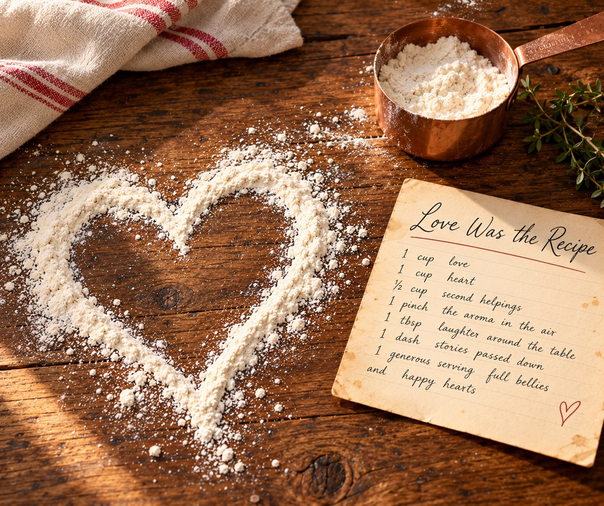

At the Table
Small in-person classes to watch, learn, ask questions, and discover the technique behind a beloved dish.
We preserve the people you love through the food they made for you with love.
The dishes we never forgot. The people who made them.The secret ingredient that never made it onto paper.

“My mother made the best.” “My dad made the best.” “Nobody could make it like my grandmother.”
We remember those dishes for a reason. Not only for how they tasted, but for who made them, where we ate them, and the love that came with being fed.
And sometimes, the person who knew exactly how to make them is no longer there to ask.
I can't count how many times I've wished I could have Baba's pierogi again.
She made them with such ease. A pile of flour. Water. A salad fork. Fillings ready to go. Her fingers moved quickly, packing the dough with filling, pinching and crimping the edges, and moving the pierogi in and out of boiling water.
She made it look effortless.
I never sat down and learned to make them with her.
Years later, my sisters and I still talk about those pierogi. I've tried to recreate them, but I think I've only gotten truly close once. What we wouldn't give to make them with her today.
That's where Love Was the Recipe begins: with the recipes we miss, the people who made them, and the knowledge worth passing on.
We're developing experiences led by heritage recipe masters: the people in our families and communities whose dishes earned the ultimate compliment — they make the best.
Small in-person classes to watch, learn, ask questions, and discover the technique behind a beloved dish.
Live-streamed sessions with advance ingredient and equipment lists. Cook along from home, or join for the story and demonstration.
Contributed recipes and their stories preserved in recipe cards and, over time, curated hardcover cookbooks.
The class preserves the technique. The story preserves the person. The collection preserves the legacy.
We all have dishes we'll never forget. Join us as we bring treasured recipes, the people behind them, and their stories to life. Be among the first to hear about our cooking experiences and upcoming collections.
Occasional updates from Love Was the Recipe. Unsubscribe anytime.